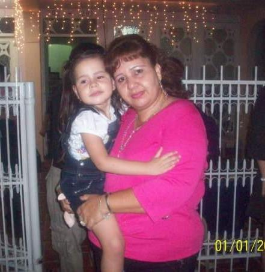
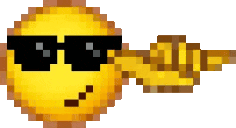
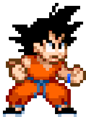

Mi nombre es Gissell. Soy una persona bastante introvertida desde que tengo memoria.
Tengo 20 años y nací el 23 de diciembre de 2005 a las 8:00 a.m., justo a tiempo para
arruinarle el 24 a mi señora madre… y de paso convertirme en su regalo de Navidad adelantado.

Actualmente estudio Ingeniería de Sistemas. Aunque, si soy completamente honesta, originalmente quería ser diseñadora gráfica.
Pero como dicen por ahí, las cosas no siempre salen como uno quiere, y a veces toca adaptarse a lo que la vida va poniendo en el camino. Aun así, intento sacarle el lado bueno a todo. También nací y crecí en esta tierrita llamada Barrancabermeja.

Me gusta mucho todo lo que tenga que ver con el arte: pinturas, dibujos, esculturas, música e incluso cosas como las cartas o ilustraciones creativas. Toco el ukelele, la flauta dulce y hace mucho tiempo la batería, lo cual ya no practico desde hace años. También aprendí a armar cubos rubik y me gustaría en algun futuro practicar el speed cubing

También dediqué una sección especial de esta página a mi galería de arte, donde recopilo mis humildes (pero queridas) ilustraciones, además de algunas de mis canciones y artistas favoritos.
Juegos: Detroit: Become Human, Beyond Two Souls, Grand Theft Auto V, Dragon Ball Xenoverse 2, Minecraft, Undertale.
Comida: Café, sushi, salchipapa, fresas con crema, helado, doritos, papas de limón, atún.
Series/anime: Tokyo Ghoul, Dragon Ball, Chowder, The Mentalist, Stranger Things.